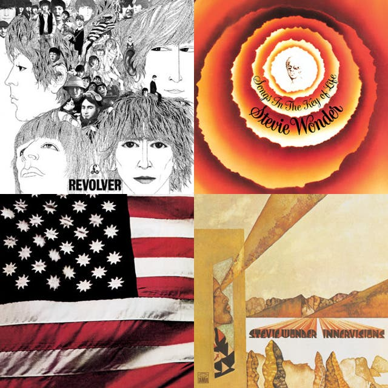

自分のことを知ってほしいときに『ここを見て』と言える場所がほしくて作ったページ。
村中（むらなか）。1999年5月16日生まれ。三重県鈴鹿市出身。筑波大学国際総合学類卒業。
旅の魅力に気づき、旅に狂った大学時代でした。
卒業後は名古屋、東京を経て、2025年2月からは大阪に移住し、関西地域を中心に楽しんでいます。
本業はソフトウェアエンジニア。三重県尾鷲市オタクおよび案内人。ミルズ大阪店公式サポーター。
好きなもの（抽象）
物事の移り変わりを感じること、個人のこだわりを感じること
好きなもの（具体）
港町、喫茶店、ローカル線、商店街、温泉（榊原温泉）、海鮮、名産品、レコード
よくいる場所
大阪キタエリア（福島〜梅田〜天満〜京橋）、三重県中勢エリア（鈴鹿市、亀山市、四日市市、津市）、三重県尾鷲市、徳島県三好市
好きな鉄道路線
近鉄大阪線、紀勢本線、山陽本線、山陰本線、肥薩おれんじ鉄道
好きな音楽
70〜80年代のファンク＆ソウルが好きです。

42 Records of MuranakaPlaylist · ayatakaa_chan · 42 itemsopen.spotify.comほしいもの
Amazon ほしい物リストamazon.jp好きな自分のポスト
2026.05.17
大阪に住んで感動したのは、西の空が広く、夕焼けの時間が長いこと。
三重や関東に住んでいたときは、西側に山があったせいか、日が沈むとあっという間に真っ暗になっていた（その分、朝は綺麗に光が差し込んだ）。
大阪は夕焼けの街。2026.05.07
6泊7日の四国旅は無事完走しました。
南海フェリーで徳島港を去り和歌山港に降り立つと、オレンジ色の夕焼けにすべてが染まっていて、ただでさえ強い旅情をさらに掻き立てられた。
今の感情もいずれ思い出になってしまうのだろうか。さよならありがとう2026.05.06
南海フェリーで徳島を去った。
振り返って思うに、今回の四国旅は、旅行というより放浪というにふさわしかった。寝る前に翌朝の、当日の朝にその夜の予定を立てる。宿も取らず、その日の天気や風の強さに合わせて、寝る場所さえも直前まで決めない旅だった。2026.05.05
四国の山間の小都市にこれほど洒脱なbarがあるなんて、誰が予想できただろうか…
2026.05.04
四国の山奥の険しい自然に、コンクリートの人工物が適応しようともがき、年月を経て風景に馴染んでいく。
今や力強い美しさとなっている。2026.05.02
四万十川沿いにて、宿を立てた。
2026.05.02
道に迷って立ち往生してたら、地元の方が声をかけてくれて案内までしてくれたんだけど、まさかの町長さんだった…！笑
愛媛県松野町ありがとう！！2026.04.26
尾鷲で甘夏収穫してます！楽しい！
2026.04.26
尾鷲の古民家の庭でバーベキューです！
2026.03.24
人生という旅の途中、節目を迎えました。
大学の卒業式で意気投合した関西好きの妻とこれからの旅路を楽しみます。2026.03.21
昨晩は憧れの丸福樓（旧任天堂本社社屋）に宿泊。積年の憧れと溶け合う夢の時間でした。
2026.01.26
三重県尾鷲市九鬼
何度も足を運んで歩いた地域なので、集落の入り組んだ路地も今はもう身体が先に覚えています2025.08.21
旅をしていた当時の情景を思い出したくなったとき用に、「それ撮る意味ある？」と言われそうな風景の写真を撮っておく
2025.08.03
宿の人たちと自己紹介しながらの食卓
旅好きの集まりでした2025.06.17
旅は、行きたいと思った時に行くべきだよ。
仕事がとか、家庭がとか、社会情勢がとか、そんなことよりも、自分の気持が「行かない理由」になる前に。2025.05.25
イタリアのボローニャという街に来ているが、期待を上回っている。ポルティコと呼ばれる雁木が街中に張り巡らされており、これが機能的で美しく、この街の個性を際立たせている。時間が許すまで街を歩き回ってこよう。
2025.05.19
転職前の最後の長期休暇を利用して、海外へ一人旅に行ってきます。
2025.01.12
おっ、と思う看板は撮影する。
今年も、これからも大事にしていきたい習慣だ。2024.11.21
雪国にありがちな広めの待合室、好き。
2024.03.17
おひつのご飯で始まる朝は良い…
2023.09.18
尾鷲の純喫茶で写真撮ってもらいました
2023.04.16
名古屋の大須でレコードプレーヤーとスピーカーを買っちゃった。3DSを買ってもらった小学生の時みたいにワクワクしている。いや、さすがにその時には負けるか。
2023.03.27
数年後にも自分がまだ旅をしているかどうかは分からないけど、車窓から海を見て黄昏るのは時々やっててほしい
2023.03.25
ホットケーキを食べに来ました
2023.03.25
僕が喫茶店巡りを始めるきっかけになったお店に来た。同じ空間さえ次第に意味が変わってく。
2023.03.24
筑波大学、卒業しました！
やりたいことは全部やった！悔いはない！2023.03.24
つくばで1番好きなラーメン屋に最後に行けて、良かったーーーーーー。
2023.03.19
青島には5時間ほど滞在した。
散歩したりベンチに座ったりしてた。
日本で行ってみたい場所は大体行ったから、気に入った場所をゆっくり楽しもうと思う2023.03.19
学割と書いた乗車券を発行できるのも最後。まだ学生でいたいという思いは微塵もないのに泣きそうになる…
2023.03.17
あり得たかもしれない人生を擬似体験できるのが、旅の醍醐味の一つ。
日南線の車窓から、福島高松駅の駅舎を見て、ここが自宅の最寄駅の人生だったら…と妄想した。2023.03.09
毎日が退屈なので、今日は意味もなくビジホに泊まりに来ました。
2023.03.04
大学5年間、どうでもいいことをひたすら勉強しまくってきた。そのどうでもいいことが役に立つ瞬間はほぼ毎日ある。「あれ無駄だったなー」と思ってることも、いつか役にたつ瞬間がくるはず。そう思うとやる気が出る。
2023.03.02
家庭的な民宿で家庭的な夕食をいただいた。鹿児島県薩摩川内市下甑町長浜。
2023.02.14
青森県の八甲田ロープウェーやばいw
この大雪でも運行されてるのもはや感動2023.01.31
津和野駅で途中下車
三文字地名に惹かれる2022.11.11
ローカル線の旅を趣味に見つけれて本当よかった……じゃないとこんな景色、見ることなかっただろうに…
2022.10.16
今までたくさん旅行してきて、旅の興味関心のジャンルも増えた。歴史遺跡、喫茶店、乗り鉄、歓楽街、商業施設、街灯、地方経済…。それらの共通点を考えるに、自分は「人の営み」に興味があるんだなって思う。いま目の前に存在するものは、どんな人たちがどんな考えで作り上げ、どう評価されているのか
2022.08.21
日本の東西南北の端を踏破達成！！！
民間人が行くことのできる日本の最東端・最西端・最南端・最北端をすべて訪問しました！！！国境の町は、周辺地域とのつながりを深く感じることができて面白い！
最東端：根室の納沙布岬
最西端：与那国島の西崎
最南端：波照間島の高那崎
最北端：稚内の宗谷岬2022.08.21
与那国島 比川集落
2022.08.20
波照間島にて、グァバを食べる。
バスガイドさんが、集落に生えてるグァバの実をちぎって採って渡してくれた。勝手に採っていいのかw
味はイチゴみたいで、小さな種がたくさん入っている（そのまま食べれる）。2022.06.24
#2022年自分が選ぶ今年上半期の4枚
・徳島県三好市
・新潟県妙高市
・長崎県平戸市
・北海道稚内市
日本は広いなあと改めて思う半年だった。2022.06.02
日本最北端のマクドナルドについに来たぞ！！！！！！！！！！！！！！！！！！！！！！！！！！！！！！！！！！！！！！！！！！！！教祖様万歳🙌
2022.05.30
旅のルーティンが僕にはある。それは「音楽のプレイリストを作る」こと。
移動中にその音楽を聴きまくっておくと、旅が終わってから聴き返した時に「あ〜この曲を聴くとあの時の旅を思い出すなあ」という気分になれて最高。2022.02.21
大雪の妙高高原にて。
駐車場に戻ってきたら車が完全に埋もれてて流石に草2022.02.20
今日の妙高高原の雪のヤバさを伝えたい。
視界見えない、ワイパー凍って機能しない、タイヤがスタックする…。今まで経験した雪道ドライブでも圧倒的No.1だった。2021.01.05
焼鳥屋に関してはルッキズム主義。店の外観で美味さがわかる